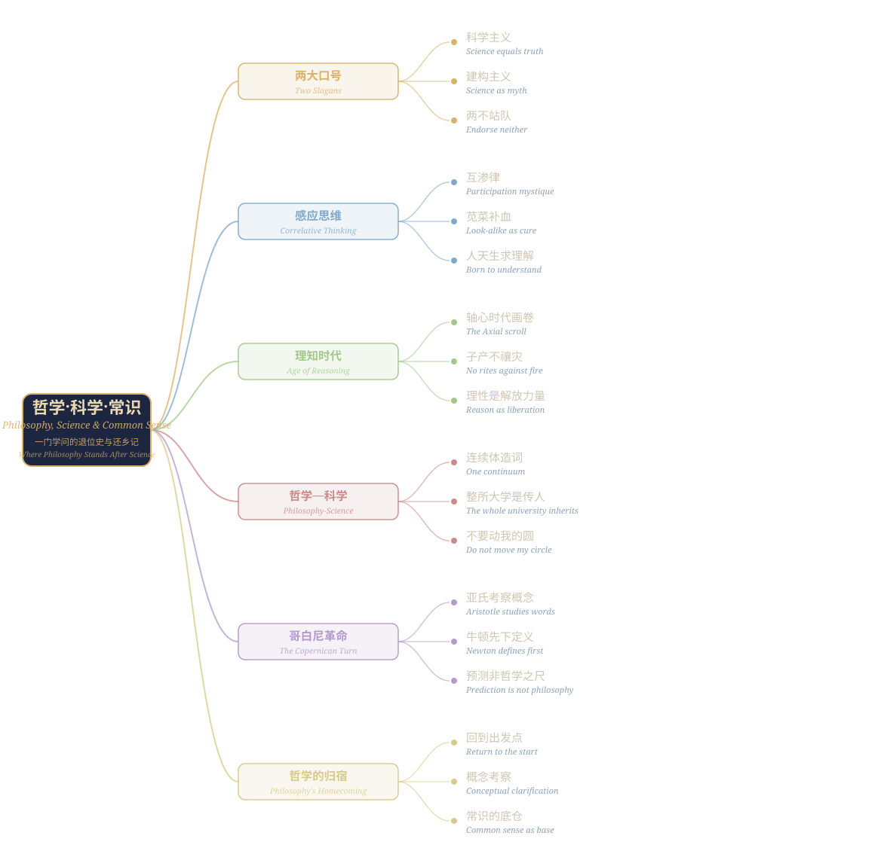

哲学·科学·常识
〇 · 书籍信息
基本信息
| 书名 | 《哲学·科学·常识》——讨论一件事：哲学如何从无所不包的整体解释，退位为今天一个小小哲学系里几个人从事的工作；而科学如何从哲学的分支（自然哲学）长成真理的代言人 |
|---|---|
| 作者 | 陈嘉映：以海德格尔《存在与时间》译本闻名的当代哲学家——本书自陈「只是我行在困惑中的一些片断思考」：不是开端，不是结论，是一个哲学家半生思考的主题化整理 |
| 结构 | 导论（科学主义与建构主义之争）→ 上篇三章（感应认知到希腊哲学 / 希腊天学到哥白尼革命 / 下篇专题）→ 下篇分专题讨论实证科学、科学概念、数学性质、预测与实在——最后一章小结：常识、科学、哲学三者关系 |
| 体裁 | 概念史写作：不回答「世界是什么」，只追问「我们用来谈论世界的词（空间、力、运动、原因）是怎么变的」——哲学探索是反思性质的，不是对事实的原初确认 |
| 一句话 | 哲学与科学本是同一根轴上的连续体；科学独立之后，哲学不必再扮演蹩脚的科学家——它的任务是回到出发点，以理性态度从事经验反思和概念考察。 |
一 · 核心主题总览
一部退位史里的四组母题：① 科学主义的战场
「科学主义，笼统地指这种观念：科学是真理的代表，甚至科学等同于真理。」建构主义则宣称科学不过是科学家共同体的谈判结果，「就像另一个神话故事」——作者的裁决冷静：科学显然不是和神话并列的一种意识形态，「科学是真理而神话不是真理」——为神话保留尊严的方式，不是说科学也不过是神话。
② 感应思维与理性态度
初民把世界理解为互相感应的东西（巫术、占星、互渗律），直到轴心时代理性思维上位——中国样本是子产：「天道远，人道迩，非所及也，何以知之？」——新兴理性态度与旧感应思维的一场著名争论；理性态度的第一个特征是反思，「在他者的背景下看待自己」，它最初不是压迫而是解放。
③ 哲学—科学：希腊的事业
为了表达古代哲学中的科学意味，作者造词「哲学—科学」：柏拉图与亚里士多德既是哲学家又是科学家，牛顿自称实验哲学家，直到十九世纪科学家还叫自然哲学——「并非咱们哲学系是柏拉图和亚里士多德的传人，整所大学才是柏拉图和亚里士多德的传人」；而「爱理论真理」的激情，「似乎是希腊人—西方人独有的激情」。
④ 哥白尼革命与哲学的归宿
自然哲学靠梳理自然概念理解现象，近代物理学靠建构技术性概念说明现象：亚里士多德考察我们日常谈论运动的概念，牛顿在《原理》里一上来先下定义——分岔口就在这里。分岔之后哲学怎么办？「哲学的任务是回到它的出发点，以理性态度从事经验反思和概念考察」——不再与科学抢普适理论的王座。
二 · 第一段 感应 · 神话 —— 认知的底色—— 互渗律 · 人天生求理解 ——
互渗律的世界
开篇把读者送回远古：「远古人类把世上的事物理解为互相感应的东西」——死人活人感应、星辰与兴衰感应、木星主福火星主祸；巫术是「控制感应的技术」。人类学的例子生动：刚果的传教士在祈祷仪式上戴一种特别的帽子，土著把一场旱灾归咎于这顶帽子，要求传教士离开。感应思维的引力来自「相像」：苋菜红所以补血，核桃像脑所以补脑，「形象上的相像和事实上的因果作用联系在一起，很容易诱人把前者当作对后者的说明」——从比喻到药方，只隔一步自作多情。
◆ 语言学习 · 概念 · 感应思维
| 感应思维 | 事物因相像、接触而互相感应的认知方式——巫术的原理 |
|---|---|
| 互渗律 | 列维-布留尔的命名：主体与对象互相渗透 |
| 巫术同一律 | 感应思维的另一种说法——相似即相连 |
| 相像的诱惑 | 从「长得像」滑到「治得了」——伪因果的第一推动力 |
句型 ｜ 「苋菜是红的，血也是红的，苋菜应有补血的功效。」——最朴素的句式里藏着最大的逻辑陷阱：类比不是论证，但类比让一切论证显得多余——伪科学从未离开这条老路。
神话是理论的前奏
每个民族都有一个神话系统，提供从世界起源到本族来历的宏大叙事。「神话用想象补足这些环节，理论则通过推理来补足」——理知时代的理论形态是神话的一种反对，也是一种延续。底层动力被亚里士多德一语道破：「人天生求理解。从人诞生的那天起，人就是一种求理解的生物。哪怕我的理解是错的，我也要理解」——作者配了一个极好的例子：悬疑片结局时垂死的人，知道了真相已经无用，「但是他还是想知道，明白了，死也瞑目了」。
◆ 语言学习 · 概念 · 求理解
| 宏大叙事 | 从创世到当下的完整故事——神话与理论共享的野心 |
|---|---|
| 前奏 | 神话之于信史与理论：不是对手，是序章 |
| 人天生求理解 | 《形而上学》开篇：理解是人的出厂配置 |
| 死也瞑目 | 悬疑片例证：理解优先于实用——求知欲的纯度检测 |
习语 ｜ 「哪怕我的理解是错的，我也要理解。」——全书的人性论起点：求知不是美德养成，是天性平反——迷信也好理论也罢，都是同一个天性的作品。
三 · 第二段 理知时代 —— 反思的黎明—— 轴心时代 · 子产不禳灾 ——
轴心时代的画卷
雅斯贝斯的「轴心时代」（公元前 800—前 200）被借作分水岭：「就像从画轴上展开一幅画卷……我们今天的文明仍然是在那个时期的原则上开展着」——我们往古时候看，一眼就能看到春秋战国，一眼却看不到春秋之前。作者以「理知时代」命名从公元前 800 年直到今天的整体：荷马史诗、《奥义书》、春秋诸子几乎同时登场。中国的特殊性在于：「先秦诸子各家各派的『理性转向』的程度虽不尽相同，但总体上都相当彻底……诸子的导向使中国成为世界上最为理性的民族」。
◆ 语言学习 · 概念 · 轴心时代
| 轴心时代 | 雅斯贝斯命名：公元前800—前200年各大文明的同时觉醒 |
|---|---|
| 理知时代 | 本书自造的命名：从轴心时代绵延至今的认知整体 |
| 画轴 | 轴心时代的比喻：画卷展开，此后三千年都是同一幅画 |
| horizon | 视域尽头：春秋是我们往回看的第一站 |
句型 ｜ 「我们今天的文明仍然是在那个时期的原则上开展着。」——一句陈述句扛起两千五百年：我们不是轴心时代的后人，我们还在轴心时代里面。
子产不禳灾
《左传》里的著名争论成了理性态度的中国注脚：彗星出现后，裨灶依据星象断定郑国将有火灾，两次要求子产祈禳。子产拒绝，说出那段著名的话：「天道远，人道迩，非所及也，何以知之？」——《左传》作者以「亦不复火」作结，立场明明白白。作者的引申更深一层：「理性态度的第一个特征是反思，在他者的背景下看待自己」——理性最初带来的不是公式，是宽容：各种观念并列杂陈，人们才需要一种超越特殊观念的态度；「理性最初是一种解放力量」。
◆ 语言学习 · 概念 · 理性态度
| 天道远人道迩 | 子产命题：可经验的人道优先于经验不及的天道 |
|---|---|
| 不禳灾 | 拒绝祈禳——理性态度的第一次公开亮相 |
| 反思 | 在他者的背景下看待自己——理性的第一特征 |
| 解放力量 | 理性最初的品质：破除部落式「非我族类」的天然正确 |
习语 ｜ 「天道远，人道迩，非所及也，何以知之？」——一句反问立起中国理性史的第一块碑：两千年后读来仍然锋利：凡是经验够不着的主张，凭什么要求我照办？
四 · 第三段 哲学—科学 —— 希腊的事业—— 整所大学 · 不要动我的圆 ——
言必称希腊
为什么一部讨论科学的书要从希腊说起？「哲学—科学」的造词理由：philosophia 中包含强烈的科学意味，但与近代实证科学有根本区别——希腊的事业是「理性的理论」：为世界提供整体解释。作者的一句名言解剖了学科地图：「我们不要被名称弄糊涂，并非咱们哲学系是柏拉图和亚里士多德的传人，整所大学才是柏拉图和亚里士多德的传人」。哲学与科学的表面区别也顺手点破：科学是集体积累的（只有一个物理学体系），哲学人言人殊（康德的体系、胡塞尔的体系）——伽达默尔半开玩笑说，书龄小于两千年的他不读。
◆ 语言学习 · 概念 · 哲学—科学
| 哲学—科学 | 作者的造词：古代 philosophia 的科学面向——哲学与科学的连续体 |
|---|---|
| episteme | 希腊语「知识」：哲学的目标曾是达到确定的知识 |
| 自然哲学 | 对自然的研究——哲学中最有理论形态的分支，近代科学的母体 |
| 整体解释 | 希腊哲学的野心：统一理解自然界与人世 |
句型 ｜ 「整所大学才是柏拉图和亚里士多德的传人。」——一句话重画学科谱系图：哲学系不是哲学的孤儿院，全校各系才是哲学的遗产继承——只是遗产正在变卖。
不要动我的圆
「爱理论真理」的激情被讲成西方精神的胎记：罗马士兵闯进阿基米德家时，他正研究沙盘上的几何图形，张开双臂护住沙盘喊出「不要动我的圆！」；伽利略被宗教法庭定罪后留下那句 Eppur si muove——但地球仍在转动。对照极锋利：中国人会为历史之真（齐太史秉笔直书「崔杼弑庄公」）杀身成仁，但「太阳绕着地球转还是地球绕着太阳转，这种事情无关乎君臣大义……却会有西方人为之赴汤蹈火」。中国的五行学说因此被判了性质：「五行学说不是一个认真的自然哲学理论，它主要是从社会和政治的角度出发的，主要用来解释朝代变迁」。
◆ 语言学习 · 概念 · 理论真理
| 不要动我的圆 | 阿基米德之死：为几何牺牲性命——理论真理的殉道图腾 |
|---|---|
| Eppur si muove | 伽利略名言：但地球仍在转动——真理对裁决的沉默反驳 |
| 崔杼弑庄公 | 齐太史兄弟前赴后继——中国人为历史之真赴死的样本 |
| 爱理论真理 | 希腊-西方的独有激情：为与利益无关的宇宙论赴汤蹈火 |
习语 ｜ 「不要动我的圆！」——四个字胜过一部科学精神史：文明之间最深的差别不在技术清单，在愿意为什么东西豁出命去。
五 · 第四段 哥白尼革命 —— 分岔口与归宿—— 先下定义 · 回到出发点 ——
两种物理学，一次分岔
分岔口被讲成工作方法的分岔：「亚里士多德在谈论运动的时候，谈的都是我们每天都见到的各种运动形式，他的工作方法主要是审慎考察我们用来谈论运动的种种概念……而牛顿在他的《原理》中则一上来先给物质、运动、力等等基本概念下定义，这些定义与我们通常对这些概念的理解相去甚远」。自然哲学以形而上学为原理，物理学最终抛弃形而上学——连衡量标准都换了：「用预测能力来要求、来衡量哲学理论，这是从根本上误解了哲学理论的性质」——亚里士多德的《政治学》没有预测帝国崛起，但这算不上缺陷。
◆ 语言学习 · 概念 · 科学革命
| 哥白尼革命 | 近代科学的起点——天学从「拯救现象」走向实在理论 |
|---|---|
| 技术性概念 | 牛顿式定义：与日常理解脱钩的人造概念——科学的建筑用砖 |
| 自然概念 | 亚里士多德的用词：直接生长于日常经验 |
| 拯救现象 | 古代天文学的自我定位：只做计算预测，不称宇宙实在 |
句型 ｜ 「亚里士多德考察我们实际上怎样使用运动等等词汇，而牛顿一上来先下定义。」——一句话画出哲学与科学的国境线：一边梳理词的用法，一边铸造新词——两种工作，两种真理。
哲学的归宿
全书的结论落在最后一章：「作为对自然界的整体理论解释，实证科学已经取代了哲学思辨。哲学思辨无法提供普适理论」——但退位不等于退场：「今天的哲学不再可能以建立普适理论为鹄的，哲学的任务是回到它的出发点，以理性态度从事经验反思和概念考察，以期克服常识的片断零星，在一定程度上获得更为连贯一致的理解」。概念考察的自觉贯穿全书：亚里士多德谈论的不是「原因」而是 aitia——四因中的形式因与质料因，我们今天根本不叫原因；「当我们说普遍的原因概念时，我们不知不觉间已经把这个概念叫作『原因』了——即使想谈论普遍的东西，也总是从一种特殊的语言开始。
◆ 语言学习 · 概念 · 概念考察
| 概念考察 | 哲学的本分：澄清我们谈论世界的词——而非发现规律与机制 |
|---|---|
| aitia | 希腊语：亚里士多德「四因」的原词——译成「原因」已是一种误植 |
| 经验反思 | 哲学的工作对象：不是事实本身，是我们对事实的理解 |
| 常识的底仓 | 理论的地基：科学解释最终要接通自然理解 |
习语 ｜ 「我还没学会怎样写哲学，但我相信已经学会了不怎样写。」——作者式的克制：「应当全面地看问题」这样的官腔句式被明令禁止——学问的一半是知道什么话不能说。
六 · 人物图鉴与成长弧线—— 主角配角 · 一张表看穿 ——
主要人物
陈嘉映——本书的叙述者与方法论示范者：译海德格尔出身，以概念史的方式追问哲学与科学——「我关心的是基本概念，概念的历史，概念的演变」：他不给世界观，给词的病历
亚里士多德——希腊哲学的集大成者、全书的方法论英雄——他考察日常运动概念的工作方式，被立为「概念考察」的千年范本
牛顿——分岔口的另一侧主角：在《原理》里一上来先下定义——技术性概念的建筑师，近代科学的开山做法从此定型
哥白尼——革命的起点：作者自陈「我谈到哥白尼比谈到伽利略多」，只因哥白尼革命更适合展开本书论题——天学是哲学与科学分家的产房
次要人物（功能位）
| 子产 | 郑国执政、《左传》里的理性态度中国样本——「天道远，人道迩」：不禳灾的一句反问，立起两千年的常识立场 |
|---|---|
| 雅斯贝斯 | 「轴心时代」的命名者——画轴之喻：此后三千年都是同一幅画的展开 |
| 阿基米德 | 「不要动我的圆」的殉道者——理论真理激情的人格化身 |
| 伽达默尔 | 「书龄小于两千年的他不读」——哲学无积累的幽默证词：今天的哲学学生仍在读孔子和柏拉图 |
七 · 主题与象征—— 每个道具都在说话 ——
| 连续体 ↔ 哲学—科学 | 自造词的深意——哲学与科学不是对手，是一根轴的两段 |
|---|---|
| 画轴 ↔ 轴心时代 | 展开而不闭幕——我们的文明仍在轴上，未必已到画端 |
| 圆 ↔ 激情 | 不要动我的圆——真理的形状是几何的，爱的形状是命的 |
| 定义 ↔ 分岔 | 牛顿先下定义——一座科学从哲学出走的海关 |
| 出发点 ↔ 归宿 | 哲学回到出发点——退位即返乡：丢掉王座，领回本分 |
八 · 写作手法赏析—— 怎么写，就能怎么学 ——
① 概念史方法
追问空间、力、运动、原因等词的语义变迁——不答「世界是什么」，只答「我们怎么谈论它」
② 历史为导线
上篇讲故事（感应—希腊—哥白尼），下篇做概念分析——先给整体画面，再做细部手术
③ 中西对照
子产与希腊、五行与基质论并列——中国的理性化程度被重新评估
④ 自我克制
「严禁出现在哲学写作中」——作者先示范了哲学不怎样写，再谈哲学怎样写
九 · 名段欣赏—— 原文精读 · 逐段赏析 ——
十 · 金句摘录—— 14 条 · 中英对照 · 带出处 ——
"科学主义，笼统地指这种观念：科学是真理的代表，甚至科学等同于真理。"—— 导论
"这样迎战科学主义未免轻率，几乎可说放弃了思想者应有的智性责任。"—— 导论 · 评建构主义
"总的说来，科学显然不是和神话并列的一种意识形态……科学是真理而神话不是真理。"—— 导论
"我还没学会怎样写哲学，但我相信已经学会了不怎样写。"—— 导论
"人天生求理解。从人诞生的那天起，人就是一种求理解的生物。哪怕我的理解是错的，我也要理解。"—— 第一章 · 引《形而上学》
"天道远，人道迩，非所及也，何以知之？"—— 第二章 · 子产
"我们今天的文明仍然是在那个时期的原则上开展着。"—— 第二章 · 论轴心时代
"理性态度的第一个特征是反思，在他者的背景下看待自己。"—— 第二章
"我们读读《左传》《史记》，读读《论语》《庄子》，我们会强烈地感受到理性最初是一种解放力量。"—— 第二章
"并非咱们哲学系是柏拉图和亚里士多德的传人，整所大学才是柏拉图和亚里士多德的传人。"—— 导论
"书龄小于两千年的他不读。"—— 导论 · 记伽达默尔
"不要动我的圆！"—— 第三章 · 阿基米德
"Eppur si muove，但地球仍在转动。"—— 第三章 · 伽利略
"哲学的任务是回到它的出发点，以理性态度从事经验反思和概念考察。"—— 下篇末章
十一 · 拓展阅读—— 原文 · 词条 · 译文 ——
十二 · 个人感悟与心得—— 三点心得 ——
三点感悟
① 常识是思想的底仓
全书最持久的提醒：技术性概念再高深，最终要接通自然理解才有意义——读任何理论（包括金融模型与管理话术）都该问一句：它到底改写了哪个日常词的意思。
② 概念考察是日常功夫
哲学不玄：「效率」「价值」「风险」这些天天用的词，正是最容易糊涂的词——对概念多问一层「我们实际上怎样使用它」，就是在做哲学的功课。
③ 各归其位的自由
科学管预测，哲学管理解，常识管生活——混淆岗位才制造焦虑：要求哲学预测未来，或要求科学提供意义，都是让球员去守门；分清后两边都轻松了。
这本退位史最终写成了一部还乡记：科学带走了整个自然界的解释权，哲学带回了一样更古老的东西——在词与词之间，把我们自己的生活想明白。
十三 · 一页速查（复习用）
| 两大口号 | 科学主义（科学=真理）vs 建构主义（科学=另一种神话）——作者两不站队 |
|---|---|
| 感应到理知 | 互渗律的世界经轴心时代转入理性态度——子产不禳灾是中国样本 |
| 哲学—科学 | 连续体造词：希腊事业是理性的理论——整所大学才是柏拉图的传人 |
| 哥白尼革命 | 自然哲学考察概念，牛顿式科学先下定义——分岔口即国境线 |
| 哲学的归宿 | 回到出发点：经验反思与概念考察——不抢科学的王座，守常识的底仓 |
十四 · 全书思维导图—— 一图纵览 ——

一图纵览全书骨架 · 中英双语对照 · 手机端可左右滑动查看全图